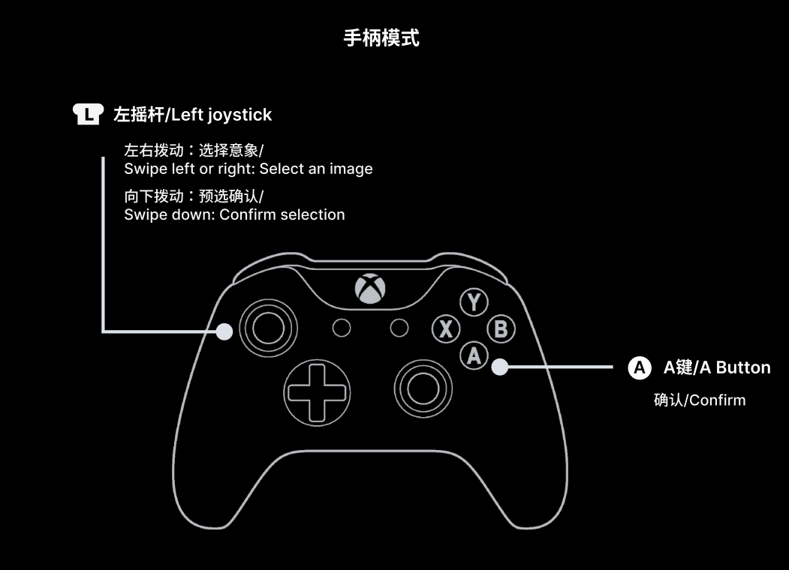
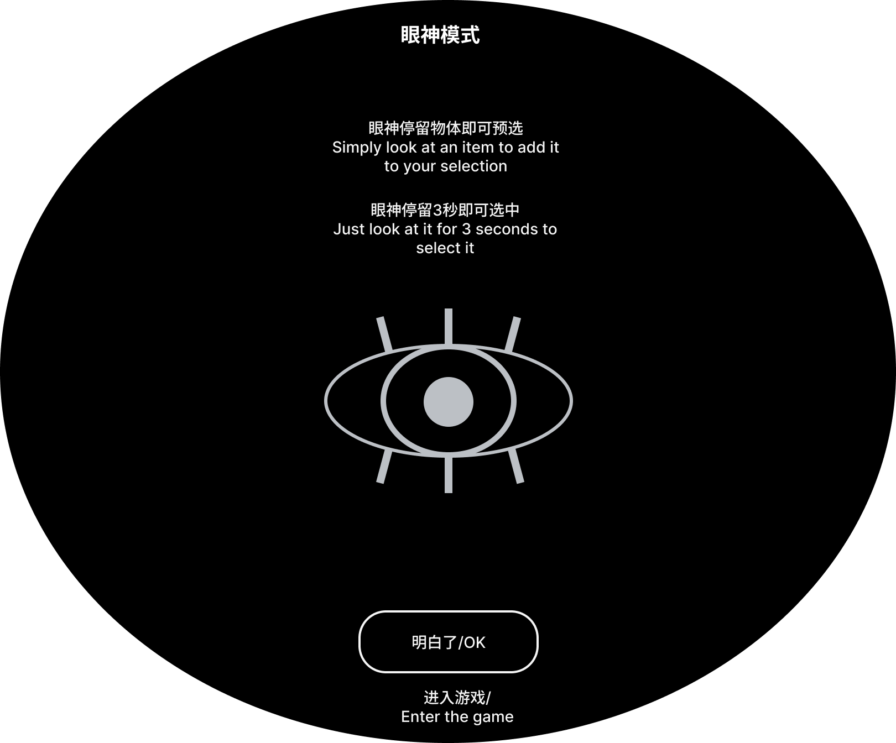

Loading 0%
正在检测手柄连接，请稍候...

左摇杆左右：切换意象
左摇杆向下：选择Done
A 键：确认 / 取消 / Done
也可以按 Enter 或手柄 A 键Enter

视线扫到意象：预选
看着意象并点击屏幕：确认 / 取消
看着Done按钮并点击：Enter下一关
也可以按 Enter Enter
等待Enter场景
接下来，戴上耳机打开声音，一起在我的生活中创造属于你的音乐。
Next, put on your headphones, turn on the sound, and create your own music through my life.